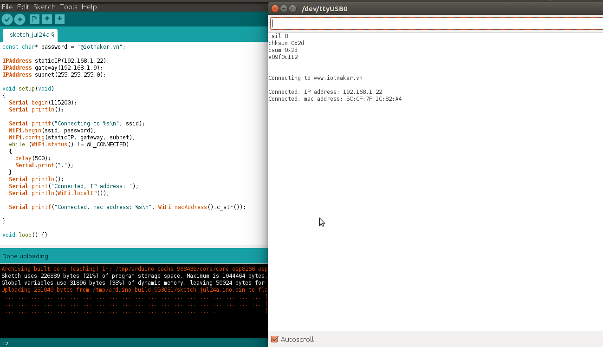

WiFi Station¶
Khái niệm cơ bản¶
Thiết bị kết nối vào mạng WIFI được gọi là station (trạm). Việc kết nối vào mạng Wifi được hỗ trợ bởi một access point (AP), một AP có chức năng như một hub nhưng dùng cho nhiều station. Một access point thông thường được kết nối vào một mạng dây để phát WIFI (tức là chuyển từ mạng dây sang WIFI). Do đó access point luôn được tích hợp vào router. Mỗi access point được nhận biết bằng một SSID (Service Set IDentifier), SSID cũng là tên của mạng hiển thị khi ta kết nối vào WIFI.
Thư viện ESP8266WiFi.h có hỗ trợ các câu lệnh để module thưc hiện việc kết nối vào WIFI (làm chức năng của station).
Nội dung của lớp này được chia thành 4 phần:
- Thứ nhất, các phương pháp để kết nối đến một điểm truy cập
- Thứ hai, cung cấp các phương pháp để quản lý kết nối như
reconnecthayisConnected. - Thứ ba, các hàm để lấy các thuộc tính về kết nối như MAC hay địa chỉ IP.
- Thứ tư, cung cấp các cách để kết nối như WPS hay Smart Config.
Mục lục¶
- Kết nối
- begin
- config0
- Quản lý kết nối
- Cấu hình
- Kết nối khác
Kết nối¶
begin¶
Để chuyển đối sang chế độ station, ta dùng hàm begin. Các tham số cần thiết sẽ là SSID và password, để module có thể kết nối đến một Access Point (AP) cụ thể.
WiFi.begin(ssid, password)
Theo mặc định, ESP sẽ cố kết nối lại đến mạng WiFi sau khi bị disconnect. Do đó chúng ta không cần phải xử lý việc này trong code.
WiFi.begin()
Gọi hàm này module sẽ chuyển sang chế độ station và kết nối với điểm truy cập cuối cùng được sử dụng dựa trên cấu hình được lưu trong bộ nhớ flash. Để thiết lập tất cả các thông số, ta có thể dùng lệnh:
WiFi.begin(ssid, password, channel, bssid, connect)
Các thông số:
ssid: tên WiFi của điểm truy cập mà chúng ta muốn kết nối đến, có thể có tối đa lên đến 32 ký tự.password: mật khẩu của điểm truy cập, có độ dài từ 8 đến 64 ký tự.channel: thiết lập kênh cho WiFi, tham số này có thể bỏ qua.bssid: địa chỉ MAC của APconnect: nếu giá trị làfalse, module sẽ lưu các tham số nhưng không thiết lập kết nối đến điểm truy cập.
config¶
Lệnh này sẽ vô hiệu hóa DHCP và thiết lập cấu hình IP tĩnh cho station.
WiFi.config(local_ip, gateway, subnet, dns1, dns2)
Các đối số:
local_ip: IP tĩnh bạn muốn gán cho modulegateway: IP của gateway (thường là router) để kết nối ra mạng bên ngoàisubnet: subnet xác định phạm vi IP của mạng nội bộdns1, dns2: các tham số tùy chọn của máy chủ phân giải tên miền
Ví dụ:
#include <ESP8266WiFi.h>
const char* ssid = "********";
const char* password = "********";
IPAddress staticIP(192,168,1,22);
IPAddress gateway(192,168,1,9);
IPAddress subnet(255,255,255,0);
void setup(void)
{
Serial.begin(115200);
Serial.println();
Serial.printf("Connecting to %s \n", ssid);
WiFi.begin(ssid, password);
WiFi.config(staticIP, gateway, subnet);
while (WiFi.status() != WL_CONNECTED)
{
delay(500);
Serial.print(".");
}
Serial.println();
Serial.print("Connected, IP address: ");
Serial.println(WiFi.localIP());
}
void loop() {}
output
Connecting to gith-wifi
.
Connected, IP address: 192.168.1.22
Video DEMO¶
Quản lý kết nối¶
reconnect¶
Điều này được thực hiện bằng cách ngắt kết nối sau đó thiết lập kết nối lại đến cùng một điểm truy cập.
WiFi.reconnect()
Ghi chú
- Trạm phải được kết nối đến một điểm truy cập. Nếu không sẽ trả về
falsevà không thực hiện bất kỳ hành động nào. - Nếu trả về
truecó nghĩa là kết nối đã được thiết lập lại, bạn vẫn phải kiểm tra trạng thái kết nối, chờ đợi cho kết khi báo cáoWL_CONNECTED
Ví dụ:
WiFi.reconnect();
while (WiFi.status() != WL_CONNECTED)
{
delay(500);
Serial.print(".");
}
disconnect¶
Thiết lập cấu hình ssid và password thành null và thực hiện ngắt kết nối đến điểm truy cập.
WiFi.disconnect(wifioff)
- Đối số
wifiofflà tham số tùy chọn kiểu boolean, nếu làtruethì chế độ trạm (station mode) sẽ bị tắt.
isConnected¶
Trả về true nếu Station kết nối với một điểm truy cập hoặc false nếu không.
WiFi.isConnected()
setAutoConnect¶
Định cấu hình module để tự động kết nối khi cấp nguồn đến điểm truy cập cuối cùng được sử dụng.
WiFi.setAutoConnect(autoConnect)
autoConnect đây là tham số tùy chọn. Nếu đặt là false thì chức năng kết nối tự động sẽ bị tắt, nếu là true hoặc bỏ qua thì kết nối tự động sẽ được kích hoạt.
getAutoConnect¶
Đây là chức năng đi đôi với setAutoConnect(). Nó trả về true nếu module được cấu hình để tự động kết nối với điểm truy cập được sử dụng lần cuối khi bật nguồn.
WiFi.getAutoConnect()
Trả về false nếu chức năng tự động kết nối bị vô hiệu.
setAutoReconnect¶
Thiết đặt cho module tự động kết nối lại với một điểm truy cập trong trường hợp nó bị ngắt kết nối.
WiFi.setAutoReconnect(autoReconnect)
Nếu tham số autoReconnect được đặt thành true, thì module sẽ cố gắng thiết lập lại kết nối bị mất với AP. Nếu thiết lập để false module sẽ không thực hiện kết nối lại.
Ghi chú
Chạy setAutoReconnect(true) khi module đã bị ngắt kết nối sẽ không kết nối lại với điểm truy cập. Thay vào đó reconnect() nên sử dụng.
waitForConnectResult¶
Chờ cho đến khi module kết nối với điểm truy cập. Chức năng này dành cho các module được cấu hình trong chế độ STA hoặc STA + AP
WiFi.waitForConnectResult()
Chức năng trả về một trong các trạng thái kết nối sau đây:
WL_CONNECTED- Sau khi kết nối thành công được thiết lậpWL_NO_SSID_AVAIL- Trong trường hợp cấu hình SSID không thể đạt đượcWL_CONNECT_FAILED- Nếu mật khẩu không chính xácWL_IDLE_STATUS- Khi WiFi đang trong quá trình thay đổi giữa các trạng tháiWL_DISCONNECTED- Nếu module không được cấu hình trong chế độ station
Cấu hình¶
macAddress¶
Lấy địa chỉ MAC của ESP station
WiFi.macAddress(mac)
Với mac đó là một con trỏ đến vị trí bộ nhớ (một mảng uint8_t có 6 phần tử) để lưu địa chỉ mac. Cùng một giá trị con trỏ được trả về bởi chính hàm đó.
Ví dụ:
if (WiFi.status() == WL_CONNECTED)
{
uint8_t macAddr[6];
WiFi.macAddress(macAddr);
Serial.printf("Connected, mac address: %02x:%02x:%02x:%02x:%02x:%02x\n", macAddr[0], macAddr[1], macAddr[2], macAddr[3], macAddr[4], macAddr[5]);
}
Nếu bạn không muốn sử dụng con trỏ, bạn có thẻ dùng lệnh dưới, nó trả về một định dạng String chứa địa chỉ mac:
WiFi.macAddress()
if (WiFi.status() == WL_CONNECTED)
{
Serial.printf("Connected, mac address: %s\n", WiFi.macAddress().c_str());
}
output:
localIP¶
Chức năng dùng để lấy địa chỉ IP của ESP station
WiFi.localIP()
Kiểu trả về là đại chỉ IP của module ESP8266.
if (WiFi.status() == WL_CONNECTED)
{
Serial.print("Connected, IP address: ");
Serial.println(WiFi.localIP());
}
output:
Connected, IP address: 192.168.1.10
subnetMask¶
Trả về subnet mask của ESP station
WiFi.subnetMask()
Module nên được kết nối với điểm truy cập. Nếu không sẽ trả về 0.0.0.0
Serial.print("Subnet mask: ");
Serial.println(WiFi.subnetMask());
output:
Subnet mask: 255.255.255.0
gatewayIP¶
Lấy địa chỉ IP của gateway
WiFi.gatewayIP()
Serial.printf("Gataway IP: %s\n", WiFi.gatewayIP().toString().c_str());
output:
Gateway IP: 192.168.1.9
dnsIP¶
Lấy địa chỉ IP của Máy chủ Tên miền (DNS).
WiFi.dnsIP(dns_no)
Với tham số đầu vào dns_no chúng ta có thể chỉ định địa chỉ IP của DNS mà chúng ta cần. Nếu không có tham số nào được cung cấp, thì IP của DNS #1 sẽ được trả về.
Ví dụ;
Serial.print("DNS #1, #2 IP: ");
WiFi.dnsIP().printTo(Serial);
Serial.print(", ");
WiFi.dnsIP(1).printTo(Serial);
Serial.println();
output:
DNS #1, #2 IP: 62.179.1.60, 62.179.1.61
hostname¶
Lấy DHCP hostname được gán cho ESP station.
WiFi.hostname()
Trả về kiểu String. Tên máy chủ mặc định ở định dạng ESP_24xMAC với 24xMAC là 24 bit cuối cùng của địa chỉ MAC của module.
Tên máy chủ có thể được thay đổi bằng cách sử dụng chức năng sau:
WiFi.hostname(aHostname)
Tham số đầu vào aHostname có thể là một kiểu char*, const char* hoặc String. Chiều dài tối đa của tên máy chủ được chỉ định là 32 ký tự. Chức năng trả về true hoặc false phụ thuộc vào kết quả.
Ví dụ, nếu giới hạn 32 ký tự vượt quá, chức năng sẽ trả lại false mà không gán tên máy chủ mới.
Ví dụ:
Serial.printf("Default hostname: %s\n", WiFi.hostname().c_str());
WiFi.hostname("Station_Tester_02");
Serial.printf("New hostname: %s\n", WiFi.hostname().c_str());
output:
Default hostname: ESP_081117
New hostname: Station_Tester_02
status¶
Trả về trạng thái kết nối Wi-Fi.
WiFi.status()
Chức năng trả về một trong các trạng thái kết nối sau đây:
WL_CONNECTED- Sau khi kết nối thành công được thiết lậpWL_NO_SSID_AVAIL- Trong trường hợp cấu hình SSID không thể đạt đượcWL_CONNECT_FAILED- Nếu mật khẩu không chính xácWL_IDLE_STATUS- Khi Wi-Fi đang trong quá trình thay đổi giữa các trạng tháiWL_DISCONNECTED- Nếu module không được cấu hình trong chế độ trạm
Giá trị trả lại kiểu wl_status_t được định nghĩa trong wl_definitions.h
Ví dụ:
#include <ESP8266WiFi.h>
void setup(void)
{
Serial.begin(115200);
Serial.printf("Connection status: %d\n", WiFi.status());
Serial.printf("Connecting to %s\n", ssid);
WiFi.begin(ssid, password);
Serial.printf("Connection status: %d\n", WiFi.status());
while (WiFi.status() != WL_CONNECTED)
{
delay(500);
Serial.print(".");
}
Serial.printf("\nConnection status: %d\n", WiFi.status());
Serial.print("Connected, IP address: ");
Serial.println(WiFi.localIP());
}
void loop() {}
output:
Connection status: 6
Connecting to sensor-net
Connection status: 6
......
Connection status: 3
Connected, IP address: 192.168.1.10
Các trạng thái kết nối đặc biệt 6 và 3 có thể được xem xét trong wl_definitions.h như sau:
3 - WL_CONNECTED
6 - WL_DISCONNECTED
Dựa trên ví dụ này, khi chạy trên mã, mô-đun ban đầu bị ngắt kết nối khỏi mạng và trả về trạng thái kết nối 6 - WL_DISCONNECTED. Nó cũng bị ngắt kết nối ngay sau khi chạy WiFi.begin(ssid, password). Sau đó, sau khoảng 3 giây (dựa trên số dấu chấm được hiển thị mỗi 500ms), cuối cùng nó sẽ được kết nối trở lại trạng thái 3 - WL_CONNECTED.
SSID¶
Trả lại tên của mạng Wi-Fi đã kết nối.
WiFi.SSID()
Kiểu trả về String
Serial.printf("SSID: %s\n", WiFi.SSID().c_str());
output:
SSID: sensor-net
psk¶
Trả lại mật khẩu hiện tại của WiFi mà module đã kết nối tới:
WiFi.psk()
Kiểu trả về String
Ví dụ:
Mô tả: Với module ESP8266 đã kết nối wifi ở trên,ta cần hiển thị password wifi đã kết nối
Ví dụ:
#include <ESP8266WiFi.h>
void setup()
{
Serial.begin(115200);
Serial.println();
Serial.printf("pass: %s ", WiFi.psk().c_str() );
}
void loop() {}
output:
pass: @iotmaker.vn
BSSID¶
Trả lại địa chỉ mac điểm truy cập mà ESP kết nối đến.
WiFi.BSSID()
Trả về một con trỏ đến vị trí nhớ (một mảng uint8_t với có kích thước là 6), nơi BSSID được lưu.
Hàm dưới đây có chức năng tương tự, nhưng trả lại BSSID là một kiểu String.
WiFi.BSSIDstr()
Serial.printf("BSSID: %s\n", WiFi.BSSIDstr().c_str());
output:
BSSID: 00:1A:70:DE:C1:68
RSSI¶
Trả lại cường độ tín hiệu của mạng Wi-Fi.
WiFi.RSSI()
Giá trị cường độ tín hiệu được cung cấp trong dBm. Kiểu trả về giá trị là int32_t.
Serial.printf("RSSI: %d dBm\n", WiFi.RSSI());
output:
RSSI: -68 dBm
Kết nối khác¶
ESP8266 SDK cung cấp các phương pháp thay thế để kết nối trạm ESP với một điểm truy cập. Core esp8266 / Arduino thực hiện WPS và Smart Config như mô tả dưới đây.
WPS¶
Chức năng beginWPSConfig sau đây cho phép kết nối với mạng sử dụng WPS (Wi-Fi Protected Setup). Hiện tại chỉ hỗ trợ cấu hình nút nhấn (chế độ WPS_TYPE_PBC) (SDK 1.5.4).
WiFi.beginWPSConfig()
Tùy thuộc vào kết quả kết nối chức năng trả về true hoặc false.
Ví dụ:
#include <ESP8266WiFi.h>
void setup(void)
{
Serial.begin(115200);
Serial.println();
Serial.printf("Wi-Fi mode set to WIFI_STA %s\n", WiFi.mode(WIFI_STA) ? "" : "Failed!");
Serial.print("Begin WPS (press WPS button on your router) ... ");
Serial.println(WiFi.beginWPSConfig() ? "Success" : "Failed");
while (WiFi.status() != WL_CONNECTED)
{
delay(500);
Serial.print(".");
}
Serial.println();
Serial.print("Connected, IP address: ");
Serial.println(WiFi.localIP());
}
void loop() {}
output:
Wi-Fi mode set to WIFI_STA
Begin WPS (press WPS button on your router) ... Success
.........
Connected, IP address: 192.168.1.102
Smart Config¶
Để bắt đầu thiết lập cấu hình bằng chức năng này, dùng lệnh sau:
beginSmartConfig()
Kiểm tra trạng thái để quyết định khi ngừng cấu hình. Chức năng trả về true hoặc false
smartConfigDone()
Dừng cấu hình thông minh, giải phóng bộ đệm beginSmartConfig(). Tùy thuộc vào chức năng kết quả trả về true hoặc false.
stopSmartConfig()
Để biết thêm chi tiết về Smart Config, vui lòng tham khảo tại đây.